Platform overview
What the platform does, how it works, and what it takes to adopt it. Read here or take the PDF.
01 / 11
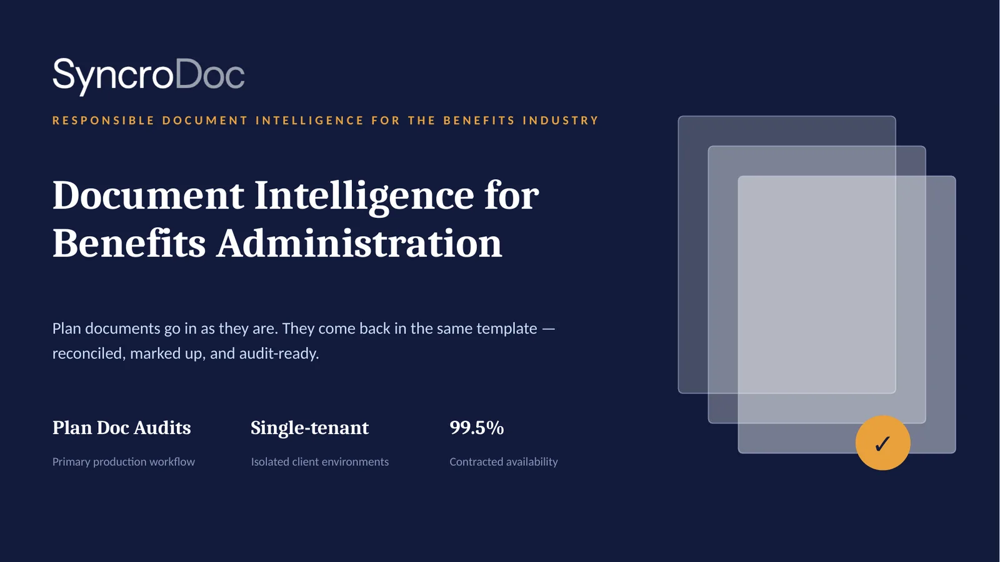
02 / 11
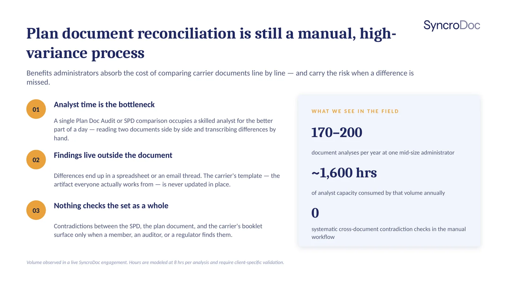
03 / 11
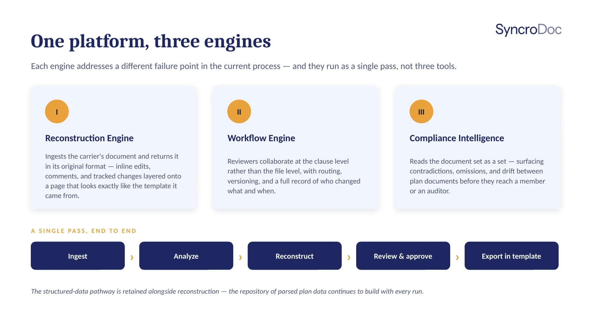
04 / 11
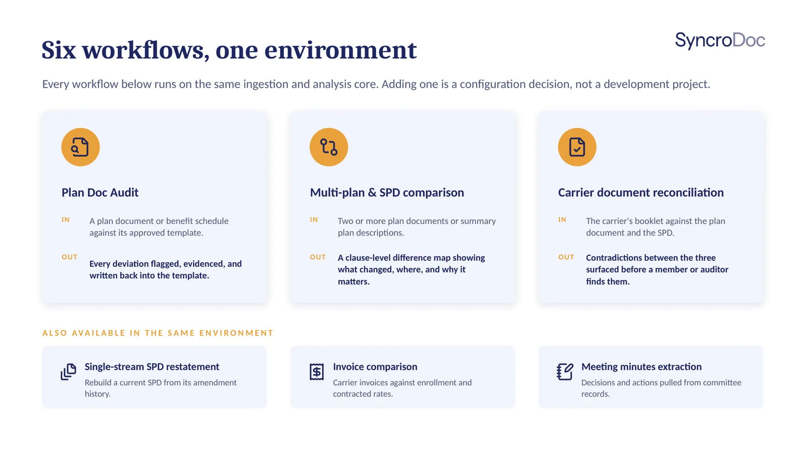
05 / 11
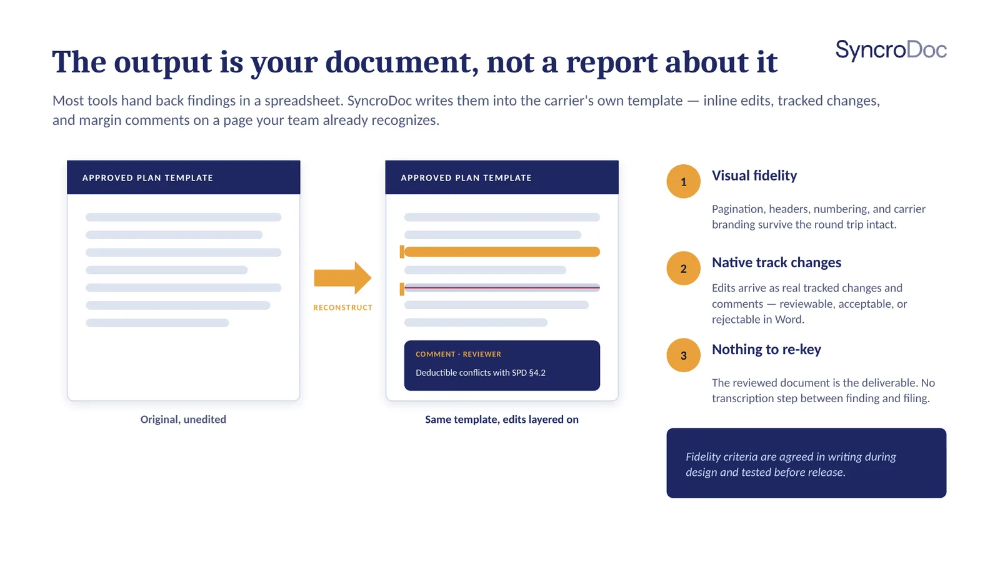
06 / 11
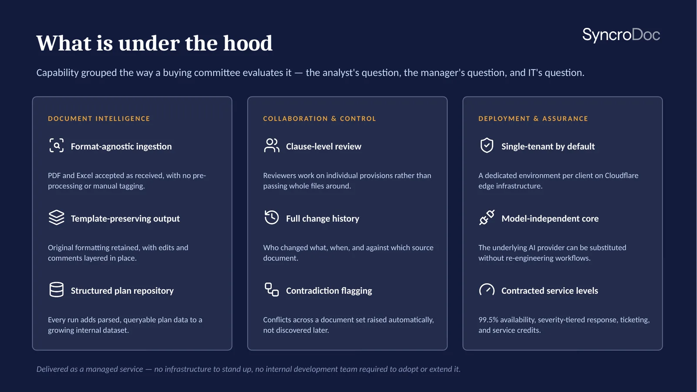
07 / 11
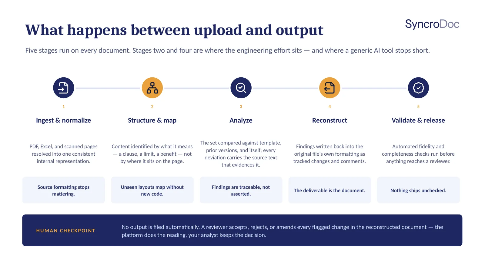
08 / 11
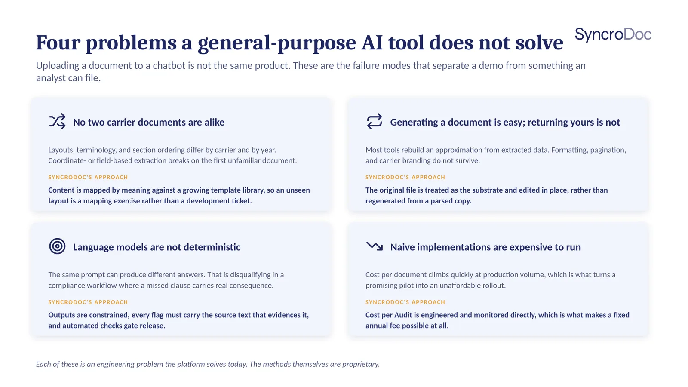
09 / 11
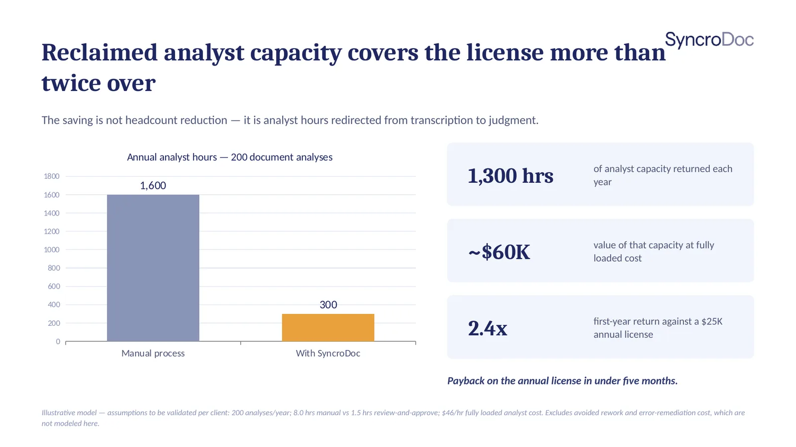
10 / 11
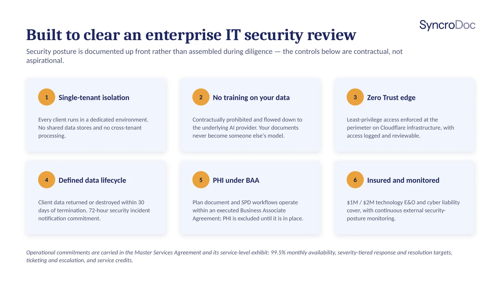
11 / 11
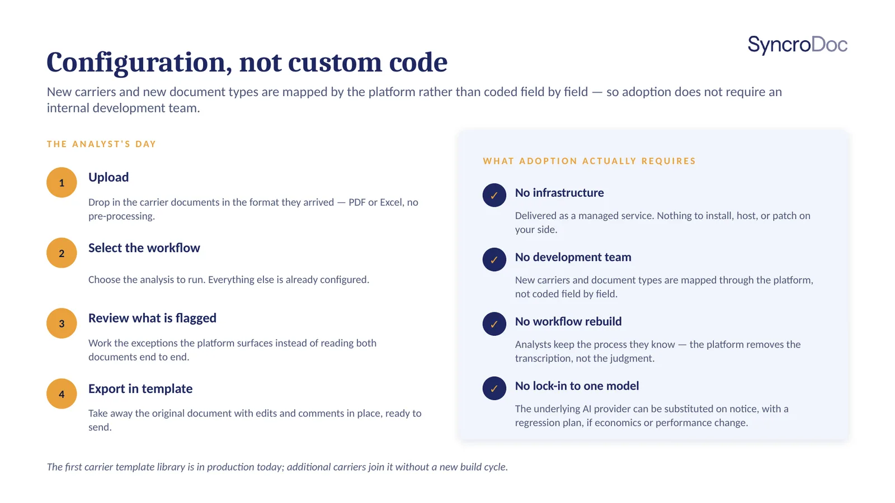